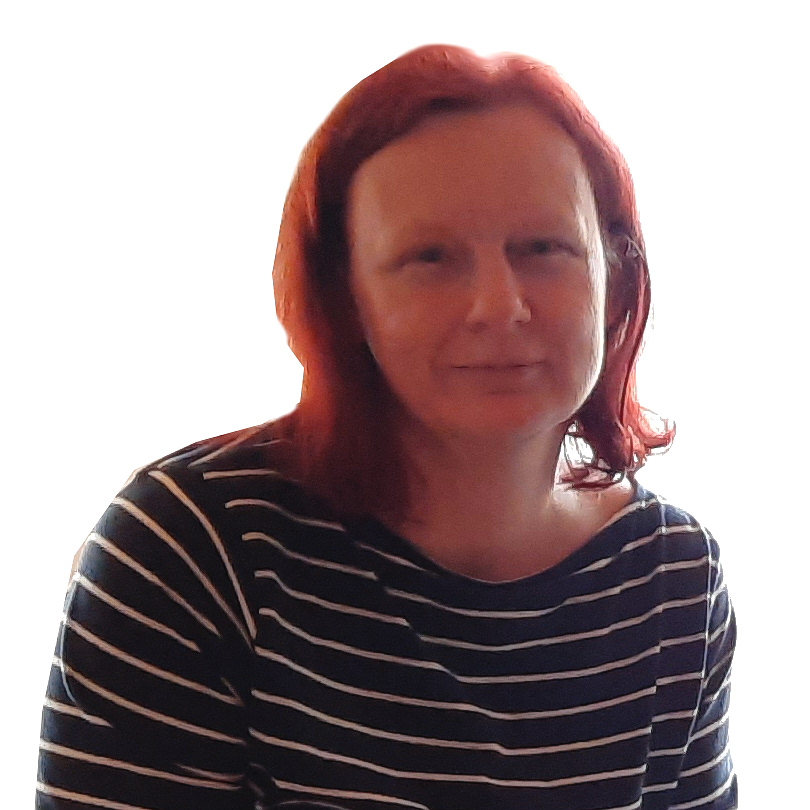

Martina Chromá

S IT koketuju téměř celý život. Pamatuju si na první Atari, které jsme měli doma ještě za dob hluboké totality a typický zvuk nahrávní z páskových kazet. První pracovní zkušenosti s laserovými přístroji a následném zpracování dat na počítači, včetně prvních zkušeností s cad systémy. Postupné osvojení všech uživatelských znalostí kancelářských programů. Díky typické německé přesnosti a důslednosti dovedení znalostí Excelu na vysokou úroveň.
Další etapa moji známosti s IT pokračovala přes velmi vřelý vztah s cad systémy pro projektování silnic, kdy po úspěšné zkoušce jsem byla druhý člověk v ČR s certifikátem, navíc ženská a blondýna navrch.
Další cesta vedla přes dvě děti přímým směrem k webům. Vzpomínám si na první jednoduché stránky, kde byl layout řešen tabulkou, floatem, děsivým pozicováním a dalšími podivnými praktikami tehdejších možností CSS.
O něco pozdějí se vrhám do světa e-shopů a přichází mé třetí "online" dítě Licence shop. Práce na e-shopu mě postupně přivedla k dalším odvětvím webové problematiky. Když jsem měla na shopu cca 1000 produktů dovídám se o tajemné zkatce SEO ... na týden se uzavírám k prácí a doplňuju ke všem produktům potřebné tagy, které mě mají vystřelit na první místa vyhledávačů.
Tak postupně nasakuju jako houba množství informací, bez kterých nemůže žádný web žít ...
Cesta k tomu tyto informace předávat dále již byla rychlá, od prvních dobrých rad pro kamarády, pro kamarády kamarádů, až k prvním klientům. Aby těch informací nebylo málo, tak na mě ze tmy ještě vykoukne Czechitas.
Nyní má cesta míří směrem k frontendu. Jednotlivé obory webové problematiky již nelze všechny sledovat a tak po patnácti letech chci začít naplno tvořit. Tvořit s využitím nabytých znalostí.
Když zrovna nesedím u počítače, tak se hrabu v hlíně na zahrádce, nebo dřepím u trouby a něco peču, hlavně něco sladkého.Neumím si představit život bez hudby. Moje nejoblíbenější kombinace je západ slunce a dobré víno. Ráda hraju, testuju a pomáhám tvořit deskové hry. Domov sdílím s královnou všehomíra - naši kočkou Lindou, která mě pravidelně trénuje na vrátnou. Miluju svoji rodinu, ježky, Iron Mana a marvelovky vůbec.
A krom toho všeho jsem prý z Marsu.
Zajímavé projekty, které jsem dělala jsou například Svatby Amélie, nebo projekt, který může za Help to Hope - "boží" stánky pro Salesiánskou farnost.
Jsem autorka a propagátorka teorie web jako čokoládová pralinka:
Pralinka musí mít dobrou čokoládu ve shodě s náplní (frontend / backend), v hezkém obalu (grafika), který lze dobře najít (SEO, marketing) a snadno rozbalit (UX). Může být sebekrásnější web, ale když to s ostatním nebude ve shodě, tak to asi nebude fungovat.